Input FormatParameter definitions
MOVEment analysis ..... (up to 80 char)
nprint nturn nanal nit nener ncoef dist
x x' y y' l 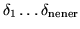
naplt delmin delmax dnumin dnumax dbmin dbmax ncol nline
nprint 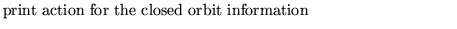
0 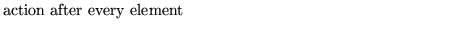
n 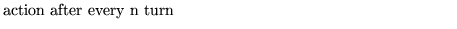
nturn 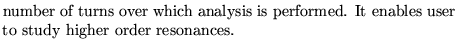
nanal
0 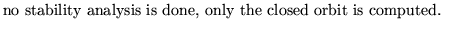
1 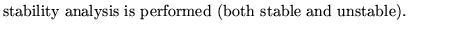
2 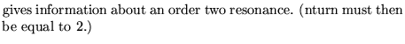
3 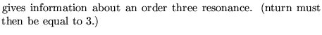
NOTE: in both cases where NANAL is equal to 2 or 3 the
resonance motion analyzed is supposed to occur in the
horizontal phase plane. If the user wants to study
resonance in the vertical plane, the machine should be
set up so that its planes are exchanged.
In the versions subsequent to April 1 1988, the
coordinates of the particles close to the unstable
fixed point of the first momentum are stored for
subsequent use in a tracking operation. See the demo3
input file for its use
nit 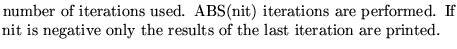
nener 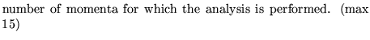
ncoef 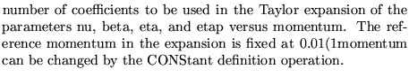
dist 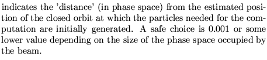
x,x',y,y',l 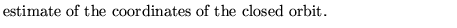
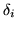 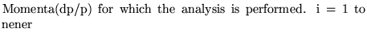
naplt
0 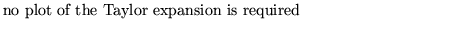
1 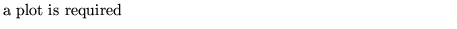
delmin delmax
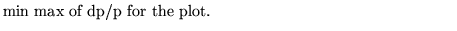
dnumin dnumax
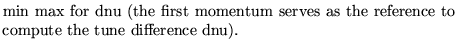
dbmin dbmax 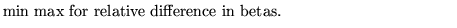
ncol nline 
Examples
The first example comes from demo2 where it is used to analyse the momentum dependence of the parameters of a stable motion.
The second, taken from demo3, illustrates the study of a third order resonance, and the use of a subsequent tracking operation to obtain the separatrices associated to the third order resonance.
MOVEMENT ANALYSIS (CHROMATIC EXPANSION) NO GRAPH 1 1 1 -4 15 6 0.00001 0 0 0 0 0 0.0 -.00001 0.00001 -.00003 0.00003 -.0001 0.0001 -.0003 0.0003 -.001 0.001 -.003 0.003 -.006 0.006 0, MOVEMENT ANALYSIS TO FIND UNSTABLE CLOSED ORBIT NEAR .03 .002 0 0 1 3 3 -4 1 0 .00001 0.03 0.002 0.0 0.0 0.0 0.00 0, tracking the 10 particles generated by the movemenet analysis just above 1 -2 0 1600 0 11 -.010 0.010 -.002 0.002 -.0006 0.0006 .0003 0.0003 51 51,